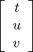
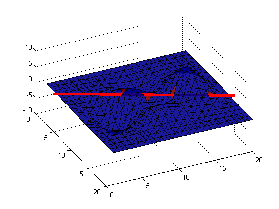
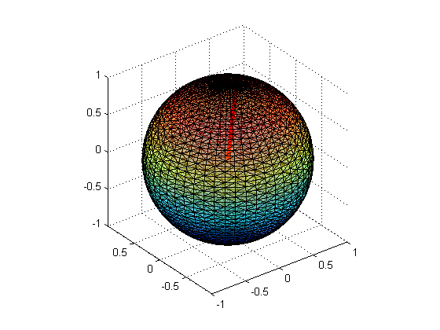
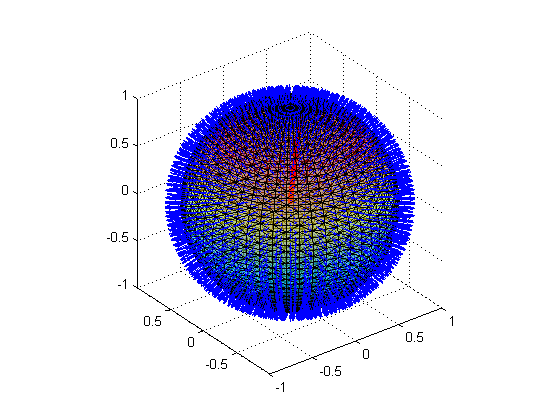
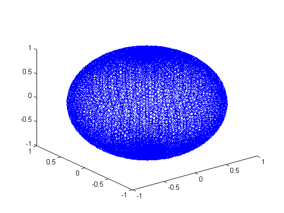
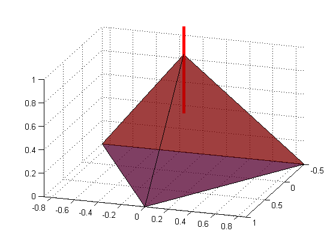
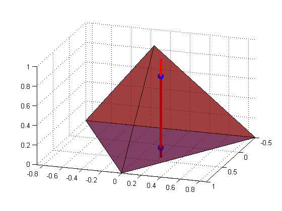
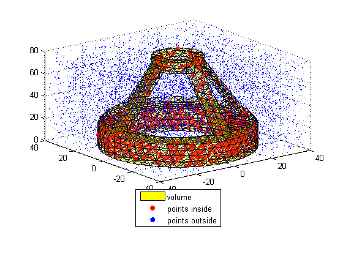

Tutorial and tests of TriangleRayIntersection function
By Jarek Tuszynski (jaroslaw.w.tuszynski@leidos.com)
Ray/triangle intersection using the algorithm proposed by Möller and Trumbore (1997), implemented as highly vectorized MATLAB code.
Note : The algorithm is able to solve several types of problems:
- many faces / single ray intersection
- one face / many rays intersection
- one face / one ray intersection
- many faces / many rays intersection
In order to allow that to happen all input arrays are expected in Nx3 format, where N is number of vertices or rays. In most cases number of vertices is different than number of rays, so one of the inputs will have to be cloned to have the right size. Use "repmat(A,size(B,1),1)" function.
Input (all arrays in in Nx3 format, where N is number of vertices or rays):
- orig : ray's origin
- dir : ray's direction
- vert0, vert1, vert2: vertices of the triangle mesh
- aditional named parameters include
- planeType - 'one sided' or 'two sided' (default) - how to treat triangles. In 'one sided' version only intersections in single direction are counted and intersections with back facing tringles are ignored
- lineType - 'ray' (default), 'line' or 'segment' - how to treat rays: (1) 'line' means infinite (on both sides) line; (2) 'ray' means infinite (on one side) ray comming out of origin; (3) 'segment' means line segment bounded on both sides
- border - controls border handling: (1) 'normal'(default) border - triangle is exactly as defined. Intersections with border points can be easily lost due to rounding errors. (2) 'inclusive' border - triangle is marginally larger. Intersections with border points are always captured but can lead to double counting when working with surfaces. (3) 'exclusive' border - triangle is marginally smaller. Intersections with border points are not captured and can lead to under-counting when working with surfaces.
- epsilon - (default = 1e-5) controls border size
- fullReturn - (default = false) controls returned variables t, u, v, and xcoor
Output:
- Intersect - boolean array of length N
- t - distance from the ray origin to the intersection point in dir
- u,v - barycentric coordinates of the intersection point units
- xcoor - carthesian coordinates of the intersection point
Contents
- Algorithm
- References
- Licence
- Create small surface and perform intersection with a ray (many faces / single ray type problem)
- Create the same surface with much more elements and perform intersection with a ray
- Triangulate a sphere and display it
- Add face normals
- Intersect different types of lines with different surfaces
- Example with many rays and many triangles (many faces / many rays type problem)
- Using option.border to customize border handling
- Test the intersection point location
- Test PointInsideVolume function
Algorithm
Function solves:
![$$\left[\begin{array}{ccc} -d_{x} & v1_{x}-v0_{x} & v2_{x}-v0_{x} \\ -d_{y} & v1_{y}-v0_{y} & v2_{y}-v0_{y} \\ -d_{z} & v1_{z}-v0_{z} & v2_{z}-v0_{z} \end{array}\right]\*\left[\begin{array}{c} t \\ u \\ v \end{array} \right]=\left[\begin{array}{c} o_{x}-v0_{x} \\ o_{y}-v0_{y} \\ o_{z}-v0_{z} \end{array}\right]$$](TriangleRayIntersection_tutorial_eq30159.png)
for .
Variables u , v are barycentric coordinates and t/|d| is the distance from the intersection point to the ray origin. Ray and triangle intersect if u>=0, v>=0 and u+v<=1 .
References
Based on
- "Fast, minimum storage ray-triangle intersection". Tomas Möller and Ben Trumbore. Journal of Graphics Tools, 2(1):21--28, 1997. http://www.graphics.cornell.edu/pubs/1997/MT97.pdf
- http://fileadmin.cs.lth.se/cs/Personal/Tomas_Akenine-Moller/raytri/
- http://fileadmin.cs.lth.se/cs/Personal/Tomas_Akenine-Moller/raytri/raytri.c
Licence
The function is distributed under BSD License
format compact; % viewing preference clear variables; close all; type('license.txt')
Copyright (c) 2011, Jaroslaw Tuszynski
All rights reserved.
Redistribution and use in source and binary forms, with or without
modification, are permitted provided that the following conditions are
met:
* Redistributions of source code must retain the above copyright
notice, this list of conditions and the following disclaimer.
* Redistributions in binary form must reproduce the above copyright
notice, this list of conditions and the following disclaimer in
the documentation and/or other materials provided with the distribution
THIS SOFTWARE IS PROVIDED BY THE COPYRIGHT HOLDERS AND CONTRIBUTORS "AS IS"
AND ANY EXPRESS OR IMPLIED WARRANTIES, INCLUDING, BUT NOT LIMITED TO, THE
IMPLIED WARRANTIES OF MERCHANTABILITY AND FITNESS FOR A PARTICULAR PURPOSE
ARE DISCLAIMED. IN NO EVENT SHALL THE COPYRIGHT OWNER OR CONTRIBUTORS BE
LIABLE FOR ANY DIRECT, INDIRECT, INCIDENTAL, SPECIAL, EXEMPLARY, OR
CONSEQUENTIAL DAMAGES (INCLUDING, BUT NOT LIMITED TO, PROCUREMENT OF
SUBSTITUTE GOODS OR SERVICES; LOSS OF USE, DATA, OR PROFITS; OR BUSINESS
INTERRUPTION) HOWEVER CAUSED AND ON ANY THEORY OF LIABILITY, WHETHER IN
CONTRACT, STRICT LIABILITY, OR TORT (INCLUDING NEGLIGENCE OR OTHERWISE)
ARISING IN ANY WAY OUT OF THE USE OF THIS SOFTWARE, EVEN IF ADVISED OF THE
POSSIBILITY OF SUCH DAMAGE.
Create small surface and perform intersection with a ray (many faces / single ray type problem)
n=20; [x,y] = meshgrid(1:n,1:n); % create 2D mesh of points faces = delaunay(x,y); % triangulate it using Delaunay algorithm z = peaks(n); % sample function defined on a grid of the same dimenision vertices = [x(:) y(:) z(:)]; % vertices stored as Nx3 matrix orig = [0.25*n 0 2]; % ray's origin dir = [0.5 *n n 0]; % ray's direction vert1 = vertices(faces(:,1),:); vert2 = vertices(faces(:,2),:); vert3 = vertices(faces(:,3),:); tic; intersect = TriangleRayIntersection(orig, dir, vert1, vert2, vert3); fprintf('Number of: faces=%i, points=%i, intresections=%i; time=%f sec\n', ... size(faces,1), size(vertices,1), sum(intersect), toc);
Number of: faces=722, points=400, intresections=4; time=0.001513 sec
Display the results: Surface in blue, line in light read and intersected triangles in dark red
figure(1); clf; trisurf(faces,x,y,z, intersect*1.0,'FaceAlpha', 0.9) hold on; line('XData',orig(1)+[0 dir(1)],'YData',orig(2)+[0 dir(2)],'ZData',... orig(3)+[0 dir(3)],'Color','r','LineWidth',3) set(gca, 'CameraPosition', [106.2478 -35.9079 136.4875]) %set(gco,'EdgeColor','none');
Create the same surface with much more elements and perform intersection with a ray
number of intersections should remain the same
n=500; [x,y] = meshgrid(1:n,1:n); % create 2D mesh of points faces = delaunay(x,y); % triangulate it using Delaunay algorithm z = peaks(n); % sample function defined on a grid of the same dimenision vertices = [x(:) y(:) z(:)]; % vertices stored as Nx3 matrix orig = [0.25*n 0 2]; % ray's origin dir = [0.5 *n n 0]; % ray's direction vert1 = vertices(faces(:,1),:); vert2 = vertices(faces(:,2),:); vert3 = vertices(faces(:,3),:); tic; intersect = TriangleRayIntersection(orig, dir, vert1, vert2, vert3); fprintf('Number of: faces=%i, points=%i, intresections=%i; time=%f sec\n', ... size(faces,1), size(vertices,1), sum(intersect), toc);
Number of: faces=498002, points=250000, intresections=4; time=0.087737 sec
Triangulate a sphere and display it
n=50; [x,y,z] = sphere(n); DT = delaunayTriangulation(x(:), y(:), z(:)); [faces, vertices] = freeBoundary(DT); figure(1); clf; trisurf(faces, vertices(:,1),vertices(:,2),vertices(:,3),'FaceAlpha', 0.5) axis equal orig = [0 0 0]; % ray's origin dir = [1 1 1]/2; % ray's direction line('XData',orig(1)+[0 dir(1)],'YData',orig(2)+[0 dir(2)],'ZData',... orig(3)+[0 dir(3)],'Color','r','LineWidth',3)
Warning: Duplicate data points have been detected and removed. The Triangulation indices are defined with respect to the unique set of points in delaunayTriangulation property X.
Add face normals
Each triangle has 2 sides. Sides can be distingish from each other by calculating surface normal (http://en.wikipedia.org/wiki/Surface_normal) in case of our sphere all surface normals are pointing outwards
hold on vert1 = vertices(faces(:,1),:); vert2 = vertices(faces(:,2),:); vert3 = vertices(faces(:,3),:); faceCenter = (vert1+vert2+vert3)/3; faceNormal = cross(vert2-vert1, vert3-vert1,2); quiver3(faceCenter(:,1),faceCenter(:,2),faceCenter(:,3),... faceNormal(:,1),faceNormal(:,2),faceNormal(:,3),3);
Intersect different types of lines with different surfaces
this section varies 'lineType' and 'triangle' parameters
TestSet = {
'lineType', 'planeType', 'comment';
'line', 'two sided', 'infinite line intersects at 2 places';
'ray', 'two sided', 'ray comming from the center intersects at 1 place';
'segment', 'two sided', 'this segment is wholy within the sphere so no intersections';
'ray', 'one sided', ['same ray does not intersect with one sided '...
'sphere if the ray points oposite to face normal'];
};
fprintf('| %8s | %9s | %7s | %s\n%s\n',TestSet{1,1}, TestSet{1,2}, ...
'# found', TestSet{1,3}, repmat('-',1, 65))
for i = 2:size(TestSet,1)
intersect = TriangleRayIntersection(orig, dir, vert1, vert2, vert3,...
'lineType', TestSet{i,1}, 'planeType', TestSet{i,2});
fprintf('| %8s | %9s | %7d | %s\n',TestSet{i,1}, TestSet{i,2}, ...
sum(intersect), TestSet{i,3})
end
| lineType | planeType | # found | comment ----------------------------------------------------------------- | line | two sided | 2 | infinite line intersects at 2 places | ray | two sided | 1 | ray comming from the center intersects at 1 place | segment | two sided | 0 | this segment is wholy within the sphere so no intersections | ray | one sided | 0 | same ray does not intersect with one sided sphere if the ray points oposite to face normal
Example with many rays and many triangles (many faces / many rays type problem)
So far all examples were of a single ray and many triangles. However one can as well have one triangle and many rays, or many rays and many triangles. Example below calculates intersections between faces and rays goint through the center of each face. Since each intersection is in the same relative point t, u and v returned are very similar. Plot shows intersection points
faceCenter = (vert1+vert2+vert3)/3; Orig = repmat(orig,size(vert1,1),1); % Clone it until the same size as vert1 [intersect, t, u, v, xcoor] = TriangleRayIntersection(Orig, ... 2*(faceCenter-Orig), vert1, vert2, vert3); fprintf('Number of: faces=%i, intresections=%i\n', size(faces,1), sum(intersect)); fprintf('mean t=%f+-%f\n', mean(t), std(t)); fprintf('mean u=%f+-%f\n', mean(u), std(u)); fprintf('mean v=%f+-%f\n', mean(v), std(v)); figure(1); clf; plot3(xcoor(:,1), xcoor(:,2), xcoor(:,3), 'o')
Number of: faces=4900, intresections=4900 mean t=0.500000+-0.000000 mean u=0.333333+-0.000000 mean v=0.333333+-0.000000
Using option.border to customize border handling
Create simple tetrahedral and add a ray passing through one of the vertices
[x,y] = pol2cart((0:2)'*2*pi/3,1); vertices = [0 0 1; x y [0; 0; 0]]; faces = [1 2 3; 1 3 4; 1 4 2; 2 3 4]; figure(1); clf; trisurf(faces, vertices(:,1),vertices(:,2),vertices(:,3),'FaceAlpha', 0.5); view([3 1 1]) axis equal vert1 = vertices(faces(:,1),:); vert2 = vertices(faces(:,2),:); vert3 = vertices(faces(:,3),:); orig = [0 0 0.5]; % ray's origin dir = [0 0 1]; % ray's destination hold on; line('XData',orig(1)+[0 dir(1)],'YData',orig(2)+[0 dir(2)],'ZData',... orig(3)+[0 dir(3)],'Color','r','LineWidth',3)
option.border controls border handling:
- border = 'normal' - border points are included, but can be easily lost due to rounding errors
- border = 'inclusive' - border points are included, with margin of option.eps
- border = 'exclusive' - border points are excluded, with margin of option.eps
intersect1 = TriangleRayIntersection(orig, dir, vert1, vert2, vert3, ... 'lineType' , 'ray', 'border', 'normal' ); intersect2 = TriangleRayIntersection(orig, dir, vert1, vert2, vert3, ... 'lineType' , 'ray', 'border', 'inclusive' ); intersect3 = TriangleRayIntersection(orig, dir, vert1, vert2, vert3, ... 'lineType' , 'ray', 'border', 'exclusive' ); fprintf('Number of intersections with border: normal=%i, inclusive=%i, exclusive=%i\n',... sum(intersect1), sum(intersect2), sum(intersect3));
Number of intersections with border: normal=3, inclusive=3, exclusive=0
Test the intersection point location
using the same figure
figure(1); clf; trisurf(faces, vertices(:,1),vertices(:,2),vertices(:,3),'FaceAlpha', 0.5); view([3 1 1]) axis equal orig = [1 1 -1]*0.1; % ray's origin dir = [0 0 1]; % ray's destination hold on; line('XData',orig(1)+[0 dir(1)],'YData',orig(2)+[0 dir(2)],'ZData',... orig(3)+[0 dir(3)],'Color','r','LineWidth',3) [intersect,~,~,~,xcoor] = TriangleRayIntersection(orig, dir, ... vert1, vert2, vert3, 'lineType' , 'line'); scatter3(xcoor(intersect,1), xcoor(intersect,2), xcoor(intersect,3), 100, 'b', 'o', 'filled')
Test PointInsideVolume function
PointInsideVolume function is an example of TriangleRayIntersection use
load tetmesh; TR = triangulation(tet,X); [faces, vertices] = freeBoundary(TR); n = 10000; points = 80*rand(n,3) - repmat([40 40 0], n, 1); in = PointInsideVolume(points, faces, vertices); clf; trisurf(faces,vertices(:,1),vertices(:,2),vertices(:,3), ... 'FaceColor','yellow','FaceAlpha', 0.2); hold on scatter3(points( in,1), points( in,2), points( in,3),30, 'r', 'fill'); scatter3(points(~in,1), points(~in,2), points(~in,3), 3, 'b', 'fill'); legend({'volume', 'points inside', 'points outside'}, 'Location', 'southoutside')